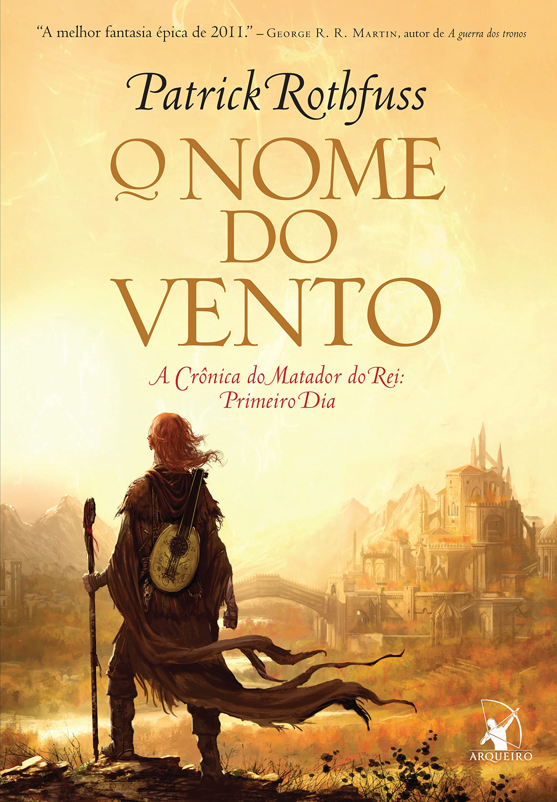
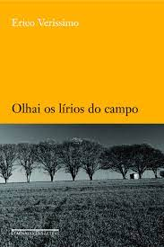

Harry Potter e a Ordem da Fênix
Sinopse
Parece impossível, mas, no bairro mais Muggle do mundo Muggle, Harry é emboscado por Dementors! Para salvar a sua vida e a do primo Dudley, Harry não tem outra hipótese senão usar magia - mesmo sabendo que isso significará a sua expulsão mais que certa de Hogwarts. Enquanto o Ministério da Magia continua a não acreditar que o terrível Senhor das Trevas está de volta, Voldemort e os seus fiéis Devoradores da Morte já começaram a preparar o seu regresso ao poder. Porém, há uma nova esperança: uma antiga ordem secreta, da qual os pais de Harry fizeram parte, voltou a organizar-se e Dumbledore está atento.
Fonte: Google Books
| Data |
Autor |
Idioma original |
Gêneros |
Número de páginas |
Editora |
2003 |
J. K. Rowling |
Inglês |
Romance, ficção juvenil, literatura fantástica |
702 |
Rocco |
O Nome do Vento

Sinopse
Da infância numa trupe de artistas itinerantes, passando pelos anos vividos numa cidade hostil e pelo esforço para ingressar na escola de magia, O nome do vento acompanha a trajetória de Kote e as duas forças que movem sua vida: o desejo de aprender o mistério por trás da arte de nomear as coisas e a necessidade de reunir informações sobre o Chandriano – os lendários demônios...
Fonte: Google Books
| Data |
Autor |
Idioma original |
Gêneros |
Número de páginas |
Editora |
2007 |
Patrick Rothfuss |
Inglês |
Literatura fantástica, Romance, Alta fantasia, Fantasia heroica |
656 |
Arqueiro |
Auto da Compadecida

Sinopse
Auto da Compadecida é uma peça teatral em forma de auto, em três atos, escrita pelo autor brasileiro Ariano Suassuna em 1955. Sua primeira encenação aconteceu em 1956, no Recife, em Pernambuco. A peça também foi encenada em 1974, com direção de João Cândido.
Fonte: Google Books
| Data |
Autor |
Idioma original |
Gêneros |
Número de páginas |
Editora |
1955 |
Ariano Suassuna |
Português |
Comédia,Aventura |
192 |
Editora Nova Fronteira |
Olhai os Lírios do Campo

Sinopse
Eugênio Pontes, moço de origem humilde, a custo se forma médico e, graças a um casamento por interesse, ingressa na elite da sociedade. Nesse percurso, porém, é obrigado a virar as costas para a família, deixar de lado antigos ideais humanitários e abandonar a mulher que realmente ama. Sensível, comovente, Olhai os lírios do campo é um convite à reflexão sobre os valores autênticos da vida.
Fonte: Google Books
| Data |
Autor |
Idioma original |
Gêneros |
Número de páginas |
Editora |
1938 |
Érico Veríssimo |
Português |
Ficção literária |
288 |
Companhia das Letras |
A Autoestrada do Sul
Sinopse
Na obra, um enorme congestionamento em uma autoestrada que liga Fontainebleau a Paris lança o caos sobre todos aqueles motoristas. Ali eles ficarão parados não apenas por horas, mas por muitos dias, enfrentando o frio, o calor, a fome, a sede e outras privações.
Fonte: Google Books
| Data |
Autor |
Idioma original |
Gêneros |
Número de páginas |
Editora |
1966 |
Júlio Cortázar |
Espanhol |
Não especificado |
285 |
L&PM |